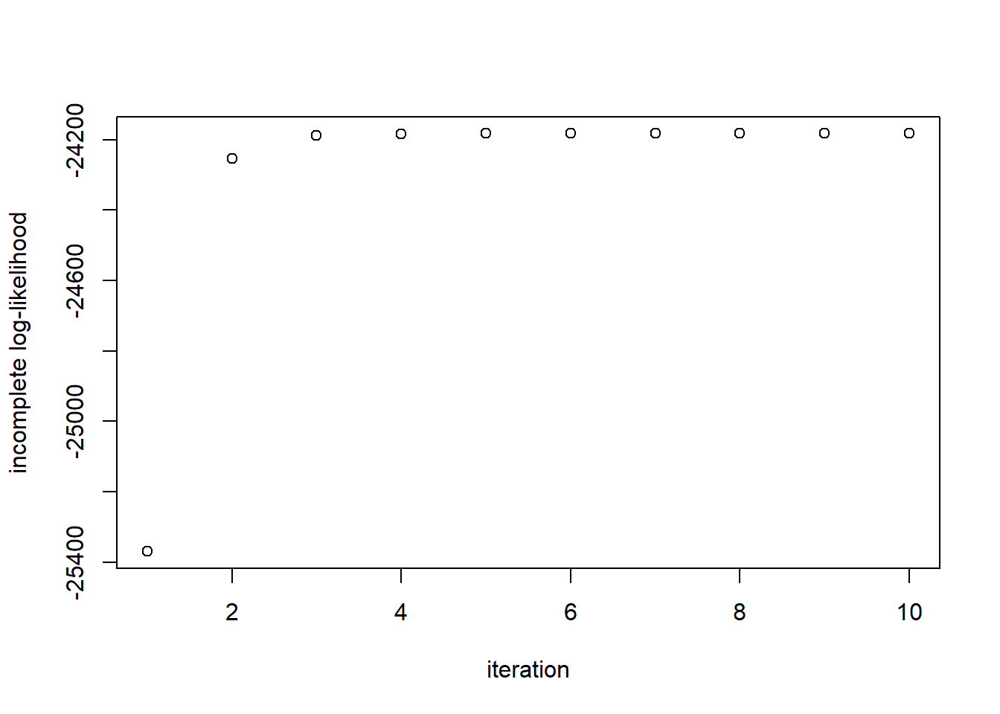

# mixture components
mu.true = c(5, 10)
sigma.true = c(1.5, 2)
# determine Z_i
Z = rbinom(500, 1, 0.75)
# sample from mixture model
X <- rnorm(10000, mean=mu.true[Z+1], sd=sigma.true[Z+1])
hist(X,breaks=15)A Gaussian mixture model is a probabilistic model that assumes all the data points are generated from a mixture of a finite number of Gaussian distributions with unknown parameters. When we say Probabilistic model it take into account the impact of random events or actions in predicting the potential occurence of future outcomes, thus it make decisions based on likelihoods and probabilities.
GMMs being a probabilistic models, represents normally distributed subpopulations within an overall population, this gives us the idea that it may have more than two components. In fact, a Gaussian mixture model is parameterized by two types of values, the mixture component weights and the component means and variances/covariances. Estimating these said parameters is important in order to measure and diagnose the underlying true values of the population. However, estimating the parameters of the individual normal distribution components is a canonical in modeling data with GMMs.
Furthermore, In frequentist probability theory, models are typically learnedby using the maximum likelihood estimation (MLE) techniques. MLE is an estimation method that allows us to use a sample to estimate the parameters of the probability distribution that generated the sample. It also seeks to maximize the probability or likelihood of the observed data given the model parameters. Unfortunately, finding the maximum likelihood solution for mixture models by differentiating the log-likelihood and solving for 0 is usually analytically impossible (McGonagle et. al). Thus, an algorithm that attempts to find maximum likelihood estimates for models with latent variables like Gaussian mixture models comes to light, called the Expectation-Maximization (EM) algorithm.
Expectation-Maximization algorithm is an iterative algorithm which is a numerical technique for maximum likelihood estimation and is usually used when closed form expression for updating the model parameters can be calculated. It has a convenient property that the maximum likelihood of the data strictly increases with each subsequent iteration, meaning it is guaranteed to approach a local maximum or saddle point. EM algorithm has two steps, the Expectation (E-step) and the Maximization (M-step). The E-step is consist of calculating the expectation of the component assignments for each data point given the model parameters. While the M-step consist of maximizing the expectations calculated in the E-step with respect to the model parameters. This step consist of updating the values of the parameters.
Before proceeding to the Maximum likelihood estimation of the Gaussian Mixture Model let’s have first a quick overview of the MLE of Normal Distribution.
MLE of Normal Distribution
Suppose we have \(n\) observations \(X_1, \dots, X_n\) from a Gaussian distribution with unknown mean \(\mu\) and known variance \(\sigma^2\). To find the maximum likelihood estimate (MLE) for \(\mu\), we find the log-likelihood \(\ell(\mu)\), take the derivative with respect to \(\mu\), set it equal to zero, and solve for \(\mu\):
First, the likelihood function \(L(\mu)\) is:
\[ L(\mu) = \prod_{i=1}^n \frac{1}{\sqrt{2\pi \sigma^2}} \exp\left(-\frac{(x_i - \mu)^2}{2\sigma^2}\right) \]
Next, the log-likelihood \(\ell(\mu)\) is:
\[ \ell(\mu) = \sum_{i=1}^n \left[\log\left(\frac{1}{\sqrt{2\pi \sigma^2}}\right) - \frac{(x_i - \mu)^2}{2\sigma^2}\right] \]
Now, differentiate the log-likelihood with respect to \(\mu\):
\[ \frac{d}{d\mu} \ell(\mu) = \sum_{i=1}^n \frac{x_i - \mu}{\sigma^2} \]
Setting this equal to zero and solving for \(\mu\), we get:
\[ \mu_{\text{MLE}} = \frac{1}{n} \sum_{i=1}^n x_i \]
Note that applying the log function to the likelihood helped decompose the product and removed the exponential function, which allowed us to easily solve for the MLE.
MLE of Gaussian Mixture Model
Now we attempt the same strategy for deriving the Maximum Likelihood Estimation (MLE) of the Gaussian Mixture Model (GMM). Our unknown parameters are:
\[ \theta = \{ \mu_1, \dots, \mu_K, \sigma_1, \dots, \sigma_K, \pi_1, \dots, \pi_K \} \]
From the first section of this note, our likelihood function is:
\[ L(\theta | X_1, \dots, X_n) = \prod_{i=1}^n \sum_{k=1}^K \pi_k \mathcal{N}(x_i; \mu_k, \sigma_k^2) \]
So our log-likelihood is:
\[ \ell(\theta) = \sum_{i=1}^n \log \left( \sum_{k=1}^K \pi_k \mathcal{N}(x_i; \mu_k, \sigma_k^2) \right) \]
Looking at the expression above, we already notice a difference between this scenario and the simple setup in the previous section. The summation over the \(K\) components “blocks” our log function from being applied directly to the normal densities.
If we follow the same steps as before and differentiate with respect to \(\mu_k\) and set the expression equal to zero, we get:
\[ \sum_{i=1}^n \frac{1}{\sum_{k=1}^K \pi_k \mathcal{N}(x_i; \mu_k, \sigma_k)} \pi_k \mathcal{N}(x_i; \mu_k, \sigma_k) \frac{(x_i - \mu_k)}{\sigma_k^2} = 0 \tag{1} \]
Now, we’re stuck because we can’t analytically solve for \(\mu_k\). However, we can make one important observation which provides intuition for what’s to come: if we knew the latent variables \(Z_i\), we could simply gather all our samples \(X_i\) such that \(Z_i = k\) and use the estimates from the previous section to estimate \(\mu_k\).
EM, Informally
Intuitively, the latent variables \(Z_i\) should help us find the MLEs. We first attempt to compute the posterior distribution of \(Z_i\) given the observations:
\[ P(Z_i = k | X_i) = \frac{P(X_i | Z_i = k) P(Z_i = k)}{P(X_i)} = \frac{\pi_k N(\mu_k, \sigma^2_k)}{\sum_{k=1}^{K} \pi_k N(\mu_k, \sigma_k)} = \gamma_{Z_i}(k) \tag{2} \]
Now we can rewrite equation (1), the derivative of the log-likelihood with respect to $ _k $, as follows:
\[ \sum_{i=1}^{n} \gamma_{Z_i}(k) (X_i - \mu_k) \sigma^2_k = 0 \]
Even though $_{Z_i}(k) $ depends on $_k $, we can cheat a bit and pretend that it doesn’t. Now we can solve for $_k $ in this equation to get:
\[ \hat{\mu}_k = \frac{\sum_{i=1}^{n} \gamma_{Z_i}(k) X_i}{\sum_{i=1}^{n} \gamma_{Z_i}(k)} = \frac{1}{N_k} \sum_{i=1}^{n} \gamma_{Z_i}(k) X_i \tag{3} \]
Where we set $ N_k = {i=1}^{n} {Z_i}(k) $. We can think of $ N_k $ as the effective number of points assigned to component $ k $. We see that $ k $ is therefore a weighted average of the data with weights ${Z_i}(k) $.
Similarly, if we apply a similar method to finding $^2_k $ and $ _k $, we find that:
\[ \hat{\sigma}^2_k = \frac{1}{N_k} \sum_{i=1}^{n} \gamma_{Z_i}(k) (X_i - \hat{\mu}_k)^2 \tag{4} \]
\[ \hat{\pi}_k = \frac{N_k}{n} \tag{5} \]
Again, remember that $_{Z_i}(k) $ depends on the unknown parameters, so these equations are not closed-form expressions. This looks like a vicious circle. But, as Cosma Shalizi says, “one man’s vicious circle is another man’s successive approximation procedure.”
We are now in the following situation:
- If we knew the parameters, we could compute the posterior probabilities $ _{Z_i}(k) $.
- If we knew the posteriors $ _{Z_i}(k) $, we could easily compute the parameters.
The EM algorithm, motivated by the two observations above, proceeds as follows:
- Initialize the $_k $’s, $ _k $’s, and $_k $’s and evaluate the log-likelihood with these parameters.
- E-step: Evaluate the posterior probabilities $_{Z_i}(k) $ using the current values of the $_k $’s and $_k $’s with equation (2).
- M-step: Estimate new parameters $_k $, $^2_k $, and $_k $ with the current values of \(\gamma_{Z_i}(k)\) using equations (3), (4), and (5).
- Evaluate the log-likelihood with the new parameter estimates. If the log-likelihood has changed by less than some small $$, stop. Otherwise, go back to step 2.
The EM algorithm is sensitive to the initial values of the parameters, so care must be taken in the first step. However, assuming the initial values are “valid,” one property of the EM algorithm is that the log-likelihood increases at every step. This invariant proves to be useful when debugging the algorithm in practice.
The EM Algorithm
The EM algorithm attempts to find maximum likelihood estimates for models with latent variables. In this section, we describe a more abstract view of EM, which can be extended to other latent variable models.
Let \(X\) be the entire set of observed variables and \(Z\) the entire set of latent variables. The log-likelihood is therefore:
\[ \log(P(X | \Theta)) = \log\left(\sum_Z P(X, Z | \Theta)\right) \]
where we’ve simply marginalized \(Z\) out of the joint distribution.
As we noted above, the existence of the sum inside the logarithm prevents us from applying the log to the densities, which results in a complicated expression for the MLE. Now suppose that we observed both \(X\) and $Z $. We call ${X, Z} $ the complete data set, and we say $X $ is incomplete. As we noted previously, if we knew $Z $, the maximization would be easy.
We typically don’t know \(Z\), but the information we do have about $Z $ is contained in the posterior $P(Z | X, ) $. Since we don’t know the complete log-likelihood, we consider its expectation under the posterior distribution of the latent variables. This corresponds to the E-step above. In the M-step, we maximize this expectation to find a new estimate for the parameters.
In the E-step, we use the current value of the parameters \(\theta_0\) to find the posterior distribution of the latent variables given by \(P(Z | X, \theta_0)\). This corresponds to the $_{Z_i}(k) $ in the previous section. We then use this to find the expectation of the complete data log-likelihood, with respect to this posterior, evaluated at an arbitrary $$. This expectation is denoted $ Q(, _0) $ and it equals:
\[ Q(\theta, \theta_0) = \mathbb{E}_{Z|X, \theta_0} \left[\log(P(X, Z | \theta))\right] = \sum_Z P(Z | X, \theta_0) \log(P(X, Z | \theta)) \]
In the M-step, we determine the new parameter \(\hat{\theta}\) by maximizing $ Q $:
\[ \hat{\theta} = \arg\max_{\theta} Q(\theta, \theta_0) \]
Gaussian Mixture Models
Now we derive the relevant quantities for Gaussian mixture models and compare it to our “informal” derivation above. The complete likelihood takes the form:
\[ P(X, Z | \mu, \sigma, \pi) = \prod_{i=1}^{n} \prod_{k=1}^{K} \pi_k^{I(Z_i = k)} N(x_i | \mu_k, \sigma_k)^{I(Z_i = k)} \]
so the complete log-likelihood takes the form:
\[ \log(P(X, Z | \mu, \sigma, \pi)) = \sum_{i=1}^{n} \sum_{k=1}^{K} I(Z_i = k) \left( \log(\pi_k) + \log(N(x_i | \mu_k, \sigma_k)) \right) \]
Note that for the complete log-likelihood, the logarithm acts directly on the normal density, which leads to a simpler solution for the MLE. As we said, in practice, we do not observe the latent variables, so we consider the expectation of the complete log-likelihood with respect to the posterior of the latent variables.
The expected value of the complete log-likelihood is therefore:
\[ \mathbb{E}_{Z|X}\left[\log(P(X, Z | \mu, \sigma, \pi))\right] = \mathbb{E}_{Z|X}\left[\sum_{i=1}^{n} \sum_{k=1}^{K} I(Z_i = k) \left( \log(\pi_k) + \log(N(x_i | \mu_k, \sigma_k)) \right)\right] \]
\[ = \sum_{i=1}^{n} \sum_{k=1}^{K} \mathbb{E}_{Z|X}[I(Z_i = k)] \left( \log(\pi_k) + \log(N(x_i | \mu_k, \sigma_k)) \right) \]
Since $_{Z|X}[I(Z_i = k)] = P(Z_i = k | X) $, we see that this is simply \(\gamma_{Z_i}(k)\) which we computed in the previous section. Hence, we have:
\[ \mathbb{E}_{Z|X}\left[\log(P(X, Z | \mu, \sigma, \pi))\right] = \sum_{i=1}^{n} \sum_{k=1}^{K} \gamma_{Z_i}(k) \left( \log(\pi_k) + \log(N(x_i | \mu_k, \sigma_k)) \right) \]
EM proceeds as follows: first choose initial values for \(\mu, \sigma, \pi\) and use these in the E-step to evaluate the \(\gamma_{Z_i}(k)\). Then, with $_{Z_i}(k) $ fixed, maximize the expected complete log-likelihood above with respect to \(\mu_k, \sigma_k\) and $_k $. This leads to the closed-form solutions we derived in the previous section.
Example
In this example, we will assume our mixture components are fully specified Gaussian distributions (i.e., the means and variances are known), and we are interested in finding the maximum likelihood estimates of the $_k $’s.
Assume we have $ K = 2 $ components, so that:
- $X_i | Z_i = 0 N(5, 1.5) $
- $X_i | Z_i = 1 N(10, 2) $
The true mixture proportions will be $P(Z_i = 0) = 0.25 $ and $P(Z_i = 1) = 0.75 $.
First, we simulate data from this mixture model:
Now we write a function to compute the log-likelihood for the incomplete data, assuming the parameters are known. This will be used to determine convergence:
[ () = {i=1}^{n} ( {k=1}^{K} N(x_i; _k, ^2_k) L[i,k] ) ]
compute.log.lik <- function(L, w) {
L[,1] = L[,1]*w[1]
L[,2] = L[,2]*w[2]
return(sum(log(rowSums(L))))
}Since the mixture components are fully specified, for each sample \(X_i\), we can compute the likelihood \(P(X_i|Z_i=0)\) and \(P(X_i|Z_i=1)\). We store these values in the columns of matrix \(L\):
L = matrix(NA, nrow=length(X), ncol= 2)
L[, 1] = dnorm(X, mean=mu.true[1], sd = sigma.true[1])
L[, 2] = dnorm(X, mean=mu.true[2], sd = sigma.true[2])Finally, we implement the E and M step in the EM.iter function below. The mixture.EM function is the driver which checks for convergence by computing the log-likelihoods at each step.
mixture.EM <- function(w.init, L) {
w.curr <- w.init
# store log-likehoods for each iteration
log_liks <- c()
ll <- compute.log.lik(L, w.curr)
log_liks <- c(log_liks, ll)
delta.ll <- 1
while(delta.ll > 1e-5) {
w.curr <- EM.iter(w.curr, L)
ll <- compute.log.lik(L, w.curr)
log_liks <- c(log_liks, ll)
delta.ll <- log_liks[length(log_liks)] - log_liks[length(log_liks)-1]
}
return(list(w.curr, log_liks))
}
EM.iter <- function(w.curr, L, ...) {
# E-step: compute E_{Z|X,w0}[I(Z_i = k)]
z_ik <- L
for(i in seq_len(ncol(L))) {
z_ik[,i] <- w.curr[i]*z_ik[,i]
}
z_ik <- z_ik / rowSums(z_ik)
# M-step
w.next <- colSums(z_ik)/sum(z_ik)
return(w.next)
}#perform EM
ee <- mixture.EM(w.init=c(0.5,0.5), L)
print(paste("Estimate = (", round(ee[[1]][1],2), ",", round(ee[[1]][2],2), ")", sep=""))[1] "Estimate = (0.26,0.74)"Finally, we inspect the evolution of the log-likelihood and note that it is strictly increases:
plot(ee[[2]], ylab='incomplete log-likelihood', xlab='iteration')